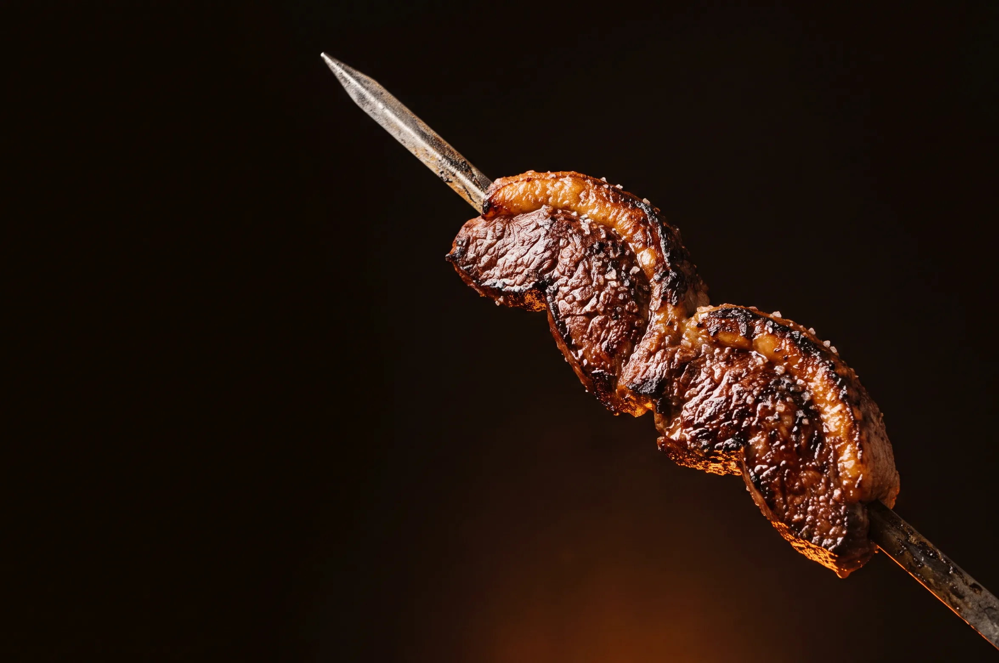
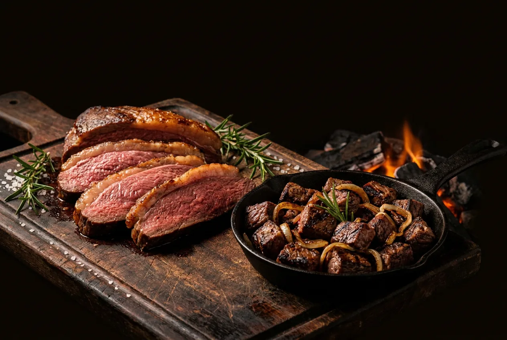
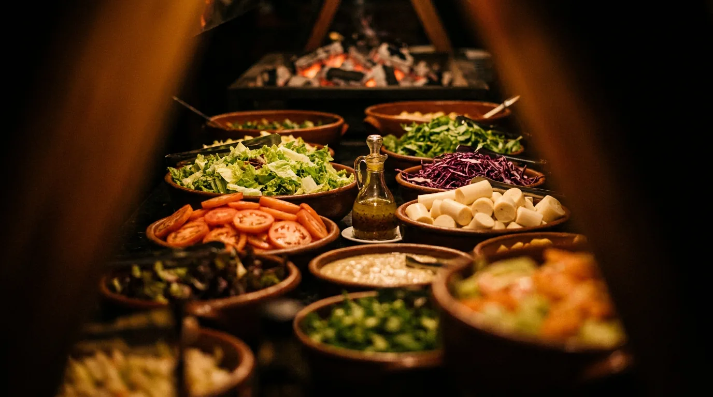
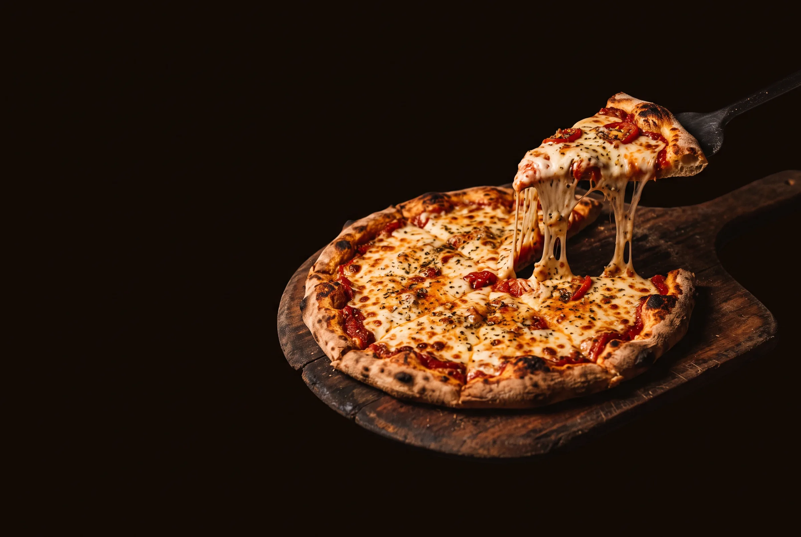
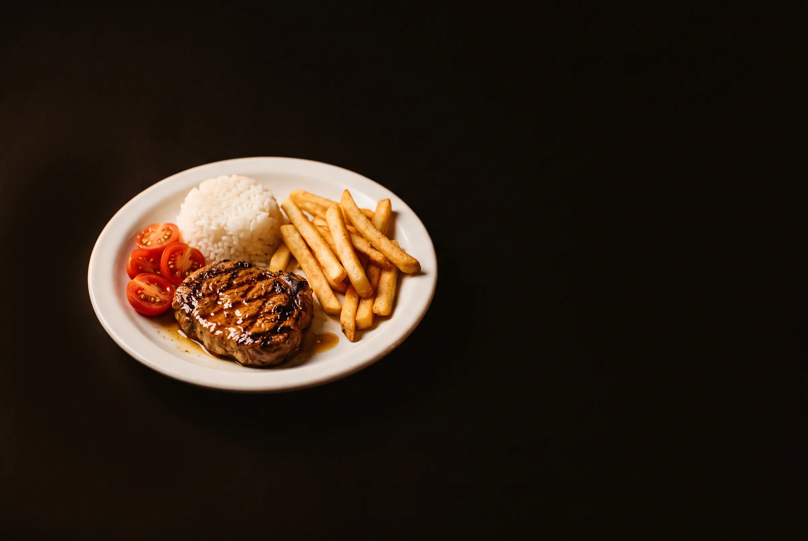
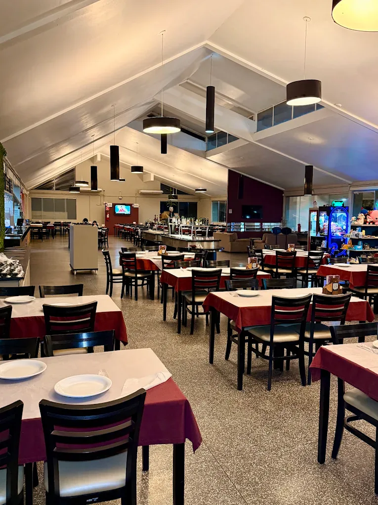
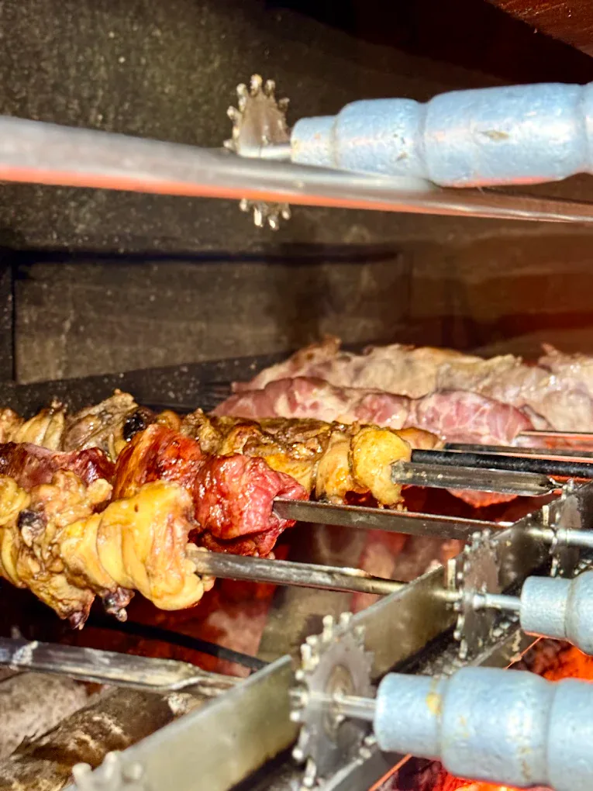
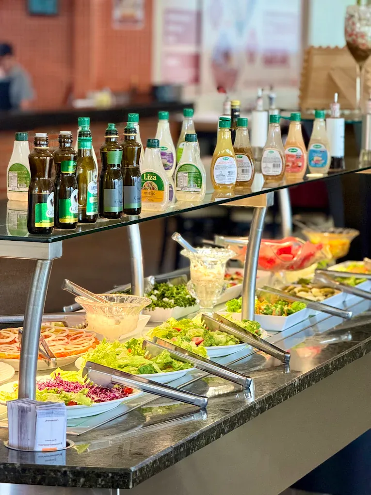
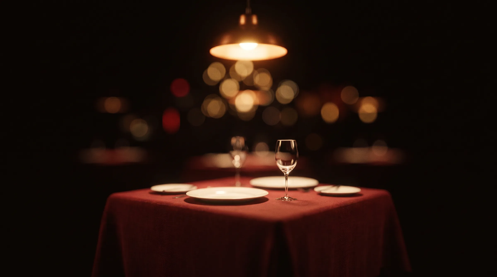

Espeto corrido
Passa de mesa em mesa e é cortado na hora.
Espeto corrido, picanha, picada, buffet livre e saladas. À noite, pizzas de muitos sabores.
O espeto sai da churrasqueira e vem até a sua mesa. Você escolhe o corte e o ponto.
Sua mesa está esperando.

Passa de mesa em mesa e é cortado na hora.

Capa de gordura dourada, rosada por dentro.
Cubos tostados na brasa, com cebola.

Folhas, legumes, molhos e pratos quentes.

Muitos sabores, a partir das 18h.

Porção certa para os pequenos.
Picanha e os cortes da casa passando de mesa em mesa, direto da churrasqueira.
Na horacortado na mesa
Reservar mesa →
É o motivo de muita gente voltar. Os espetos ficam girando sobre o carvão e, quando a carne chega no ponto, vão direto para o salão. O garçom passa de mesa em mesa e corta na hora, na frente de você.
Prefere mais mal passada ou bem passada? É só avisar quando o espeto passar pela mesa.
Desde 1998 na brasa, em Canoinhas
Reservar mesa
Na churrasqueira da Portal a carne assa devagar, girando no espeto, até chegar no ponto certo.
Pratos quentes e acompanhamentos para montar o prato do seu jeito. Pode repetir quantas vezes quiser.
Um balcão inteiro de folhas, legumes e molhos, sempre reposto, para equilibrar o churrasco.
A partir das 18h, o forno entra em cena. São pizzas de muitos sabores, dos clássicos aos mais caprichados e queijo derretendo.
Peça uma, peça meia a meia, divida com a mesa toda.
Bifinho, arroz, batata frita e salada, num tamanho certo para os pequenos. Os pais curtem o espeto corrido com calma, e as crianças comem o que gostam.
Pé-direito alto, toalhas vinho, o balcão de saladas no centro e espaço para grupos grandes e para a família inteira.


Preencha os dados e confirme pelo WhatsApp. A gente responde por lá. Aos domingos, abrimos só no almoço.